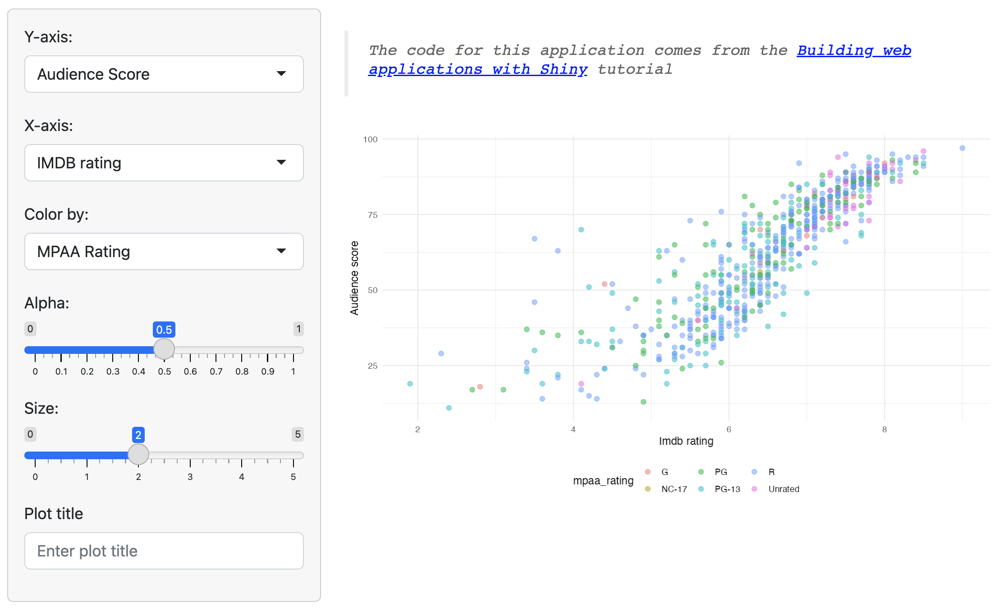
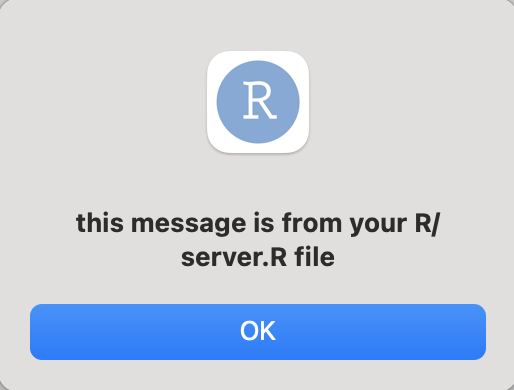
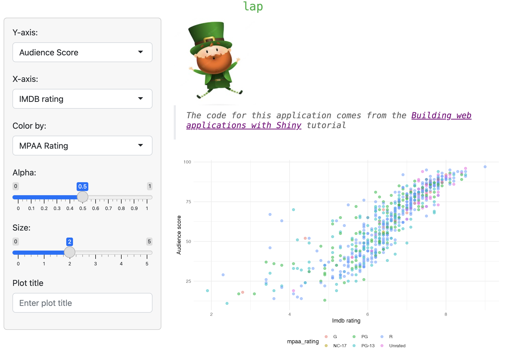

usethis::create_package("lap")The leprechaun framework
lap
leprechaun apps are built much like R packages (with devtools and usethis), but they are designed with the intention of being a ‘leaner and smaller’ version of golem:
“it generates code and does not make itself a dependency of the application you build; this means applications are leaner, and smaller”
Start
Create a leprechaun app just like you would a new R package:
✔ Creating '../projects/lap/'
✔ Setting active project to '/Users/mjfrigaard/projects/lap'
✔ Creating 'R/'
✔ Writing 'DESCRIPTION'
✔ Writing 'NAMESPACE'
✔ Writing 'lap.Rproj'
✔ Adding '^lap\\.Rproj$' to '.Rbuildignore'
✔ Adding '.Rproj.user' to '.gitignore'
✔ Adding '^\\.Rproj\\.user$' to '.Rbuildignore'
✔ Opening '/Users/mjfrigaard/projects/lap/' in new RStudio sessionAfter the new project opens, install and load the leprechaun package, then run leprechaun::scaffold():
install.packages("leprechaun")
library(leprechaun)
leprechaun::scaffold()── Scaffolding leprechaun app ─────────────────────────────────────────
── Creating lock file ──
✔ Creating .leprechaun
── Adding dependencies ──
✔ Adding 'shiny' to Imports in DESCRIPTION
✔ Adding 'bslib' to Imports in DESCRIPTION
✔ Adding 'htmltools' to Imports in DESCRIPTION
✔ Adding 'pkgload' to Suggests in DESCRIPTION
── Generating code ──
✔ Creating R/ui.R
✔ Creating R/assets.R
✔ Creating R/run.R
✔ Creating R/server.R
✔ Creating R/leprechaun-utils.R
✔ Creating R/_disable_autoload.R
✔ Creating R/zzz.R
✔ Creating R/input-handlers.R
✔ Creating inst/dev
✔ Creating inst/assets
✔ Creating inst/img
✔ Creating inst/run/app.R
── Ignoring files ──
✔ Adding '^\\.leprechaun$' to '.Rbuildignore'This results in the following folder tree:
lap/
├── DESCRIPTION
├── NAMESPACE
├── R/
│ ├── _disable_autoload.R
│ ├── assets.R
│ ├── input-handlers.R
│ ├── leprechaun-utils.R
│ ├── run.R
│ ├── server.R
│ ├── ui.R
│ └── zzz.R
├── inst/
│ ├── assets/
│ ├── dev/
│ ├── img/
│ └── run/
│ └── app.R
└── lap.Rproj
7 directories, 12 filesThe standard R package files and folders (DESCRIPTION, NAMESPACE, R/, and lap.Rproj) are accompanied by multiple sub-folders in inst/ (recall that inst/ contents are available in the package when the package is installed).
R/
The initial application files are created using leprechaun::scaffold(), which takes the following options as function arguments:
uicontrols the application layout (can be"fluidPage"or"navbarPage", defaults to"navbarPage")bs_versionBootstrap version (“If shiny > 1.6 is installed defaults to version 5, otherwise version 4” )overwrite: Overwrite all files?
└── R/
├── _disable_autoload.R
├── assets.R
├── input-handlers.R
├── leprechaun-utils.R
├── run.R
├── server.R
├── ui.R
└── zzz.R_disable_autoload.Rdisables Shiny’sloadSupport(). By default, Shiny will load “any top-level supporting.Rfiles in theR/directory adjacent to theapp.R/server.R/ui.Rfiles.”assets.R: contains theserveAssets()function, which will identify the modules using CSS or JavaScript and createdependencies, a list of metadata on the appinput-handlers.R: containsleprechaun_handler_df()andleprechaun_handler_list()for “converting the input received from the WebSocket to a data.frame/list”.onAttach()registers the two input handlers aboveregisterInputHandler(): “When called, Shiny will use the function provided to refine the data passed back from the client (after being deserialized byjsonlite) before making it available in the input variable of theserver.Rfile”)
leprechaun-utils.Rinitially contains themake_send_message()function (which is used in theR/server.Rbelow)run.Rcontains functions for running the production (run()) and development version of the application (run_dev()):server.Rby default createssend_messagewithmake_send_message(session)(seeR/leprechaun-utils.Rabove).ui.Rholds theui()andassets()functions.assets()loads the resources called in theR/assets.Rfile (seeserveAssets()function above).zzz.Rcontains.onLoad(), a wrapper forsystem.file()and Shiny’saddResourcePath()and function (used for adding images to the application ininst/img/).
inst/
The inst/ folder contains the initial leprechaun scaffolding folders:
inst/
├── assets
├── dev
├── img
└── run
└── app.R
4 directories, 1 fileassets, dev, and image will be demonstrated in the sections below. The inst/run/app.R contains calls to leprechaun::build() and pkgload::load_all() before running the app with run()
# do not deploy from this file
# see leprechaun::add_app_file()
leprechaun::build()
pkgload::load_all(
path = "../../",
reset = TRUE,
helpers = FALSE
)
run()This file is not run directly (check leprechaun::add_app_file())
Develop
Building leprechaun apps is similar to developing an R package. New code is placed in the R/ folder, and application resources (CSS, SASS, JavaScript files) are added using one of the leprechaun::use_* functions:
More assets can be added using the leprechaun::use_packer() function.
The leprechaun::scaffold() defaults to a navbarPage(), but I’ve switched to a fluidPage() for this example.
add_module()
leprechaun has an add_module() helper function for creating modules:
The initial
var_inputmodule:leprechaun::add_module("var_input")- This creates functions for the UI and server portions of the module.
#' var_input UI #' #' @param id Unique id for module instance. #' #' @keywords internal var_inputUI <- function(id){ ns <- NS(id) tagList( h2("var_input"), ) }- The initial server module:
#' var_input Server #' #' @param id Unique id for module instance. #' #' @keywords internal var_input_server <- function(id){ moduleServer( id, function( input, output, session ){ ns <- session$ns send_message <- make_send_message(session) # your code here } ) } # UI # var_inputUI('id') # server # var_input_server('id')
Note the send_message <- make_send_message(session) in var_input_server(). We’ll cover how this is used in the JavaScript section below.
Tip:
@keywords internal
The module contents are similar to golem, but instead of using the @noRd tag, these functions include @keywords internal (which can be used to document your package).
The code for the var_input and plot_display modules are below.
- The
R/module_var_input.Rfile:plot_dispaycollects the data fromvar_inputand creates the plot with the customscatter_plot()function:
var_inputUI <- function(id) {
ns <- NS(id)
tagList(
selectInput(
inputId = ns("y"),
label = "Y-axis:",
choices = c(
"IMDB rating" = "imdb_rating",
"IMDB number of votes" = "imdb_num_votes",
"Critics Score" = "critics_score",
"Audience Score" = "audience_score",
"Runtime" = "runtime"
),
selected = "audience_score"
),
selectInput(
inputId = ns("x"),
label = "X-axis:",
choices = c(
"IMDB rating" = "imdb_rating",
"IMDB number of votes" = "imdb_num_votes",
"Critics Score" = "critics_score",
"Audience Score" = "audience_score",
"Runtime" = "runtime"
),
selected = "imdb_rating"
),
selectInput(
inputId = ns("z"),
label = "Color by:",
choices = c(
"Title Type" = "title_type",
"Genre" = "genre",
"MPAA Rating" = "mpaa_rating",
"Critics Rating" = "critics_rating",
"Audience Rating" = "audience_rating"
),
selected = "mpaa_rating"
),
sliderInput(
inputId = ns("alpha"),
label = "Alpha:",
min = 0, max = 1, step = 0.1,
value = 0.5
),
sliderInput(
inputId = ns("size"),
label = "Size:",
min = 0, max = 5,
value = 2
),
textInput(
inputId = ns("plot_title"),
label = "Plot title",
placeholder = "Enter plot title"
)
)
}
var_input_server <- function(id) {
moduleServer(id, function(input, output, session) {
ns <- session$ns
send_message <- make_send_message(session)
# your code here
return(
reactive({
list(
"y" = input$y,
"x" = input$x,
"z" = input$z,
"alpha" = input$alpha,
"size" = input$size,
"plot_title" = input$plot_title
)
})
)
}
)
}- The
R/module_plot_display.Rfile
plot_displayUI <- function(id) {
ns <- NS(id)
tagList(
tags$br(),
tags$blockquote(
tags$em(
tags$h6(
"The code for this application comes from the ",
tags$a("Building web applications with Shiny",
href = "https://rstudio-education.github.io/shiny-course/"
),
"tutorial"
)
)
),
plotOutput(outputId = ns("scatterplot"))
)
}
plot_display_server <- function(id, var_inputs) {
moduleServer(id, function(input, output, session) {
ns <- session$ns
send_message <- make_send_message(session)
inputs <- reactive({
plot_title <- tools::toTitleCase(var_inputs()$plot_title)
list(
x = var_inputs()$x,
y = var_inputs()$y,
z = var_inputs()$z,
alpha = var_inputs()$alpha,
size = var_inputs()$size,
plot_title = plot_title
)
})
output$scatterplot <- renderPlot({
plot <- scatter_plot(
# data --------------------
df = movies,
x_var = inputs()$x,
y_var = inputs()$y,
col_var = inputs()$z,
alpha_var = inputs()$alpha,
size_var = inputs()$size
)
plot +
ggplot2::labs(
title = inputs()$plot_title,
x = stringr::str_replace_all(
tools::toTitleCase(inputs()$x), "_", " "),
y = stringr::str_replace_all(
tools::toTitleCase(inputs()$y), "_", " ")) +
ggplot2::theme_minimal() +
ggplot2::theme(legend.position = "bottom")
})
}
)
}After creating the modules, adding them to the UI (R/ui.R) and server (R/server.R) is straightforward.
- The
R/ui.Rfile: the UI includes thebs_theme()function (with version set to5).
#' Shiny UI
#'
#' Core UI of package.
#'
#' @param req The request object.
#'
#' @import shiny
#' @importFrom bslib bs_theme
#'
#' @keywords internal
ui <- function(req) {
fluidPage(
theme = bs_theme(version = 5),
assets(),
h1("lap"),
# Begin new code -->
shiny::sidebarLayout(
shiny::sidebarPanel(
var_inputUI("vars")
),
shiny::mainPanel(
plot_displayUI("plot")
)
)
## End new code <--
)
}- The
R/server.Rfile: The server also has themake_send_message()function in it by default (more on that below).
#' Server
#'
#' Core server function.
#'
#' @param input,output Input and output list objects
#' containing said registered inputs and outputs.
#' @param session Shiny session.
#'
#' @noRd
#' @keywords internal
server <- function(input, output, session){
send_message <- make_send_message(session)
## New code -->
selected_vars <- var_input_server("vars")
plot_display_server("plot", var_inputs = selected_vars)
## New code <--
}The other components of lap were created using the standard usethis package development functions.
Add data
movies.RDatawas added toinst/extdataand loaded into the package withusethis::use_data_raw()
Adding data to a package
After calling usethis::use_data_raw('movies'), I can use system.file() to locate the file with the following code in data-raw/movies.R:
## code to prepare `movies` dataset goes here
pth <- system.file('extdata/movies.RData', package = 'lap')
load(pth)
usethis::use_data(movies, overwrite = TRUE)Add utility function
usethis::use_r()createdR/utils_plot_display.Rto hold thescatter_plot()function::: {.cell}
scatter_plot <- function(df, x_var, y_var, col_var, alpha_var, size_var) { ggplot2::ggplot(data = df, ggplot2::aes(x = .data[[x_var]], y = .data[[y_var]], color = .data[[col_var]])) + ggplot2::geom_point(alpha = alpha_var, size = size_var) }:::
Now I can run devtools::load_all(), devtools::document(), restart and load the package, then run()

lapAdding features
leprechaun stores external code files the inst/ folder (similar to the golem framework), but uses a combination of use_* and build() functions to add functionality to you app.
Use packer
I’ll demonstrate how make_send_message() function works by walking through the JavaScript example from the package website.
- First we have to build the scaffolding for packer by running
packer::scaffold_leprechaun()
packer::scaffold_leprechaun()── Scaffolding leprechaun ──────────────────────────────────────
✔ Initialiased npm
✔ webpack, webpack-cli, webpack-merge installed with scope "dev"
✔ Added npm scripts
✔ Created srcjs directory
✔ Created srcjs/config directory
✔ Created webpack config files
── Adding files to .gitignore and .Rbuildignore ──
✔ Setting active project to '/projects/apps/sfw/_apps/lap'
✔ Adding '^srcjs$' to '.Rbuildignore'
✔ Adding '^node_modules$' to '.Rbuildignore'
✔ Adding '^package\\.json$' to '.Rbuildignore'
✔ Adding '^package-lock\\.json$' to '.Rbuildignore'
✔ Adding '^webpack\\.dev\\.js$' to '.Rbuildignore'
✔ Adding '^webpack\\.prod\\.js$' to '.Rbuildignore'
✔ Adding '^webpack\\.common\\.js$' to '.Rbuildignore'
✔ Adding 'node_modules' to '.gitignore'
── Scaffold built ──
ℹ Run `bundle` to build the JavaScript files
ℹ Run `leprechaun::use_packer()`- Now that the scaffolding is in place, run
leprechaun::use_packer():
leprechaun::use_packer()✔ Creating inst/dev/packer.R
✔ Adding 'packer' to Suggests in DESCRIPTION
! This requires `leprechaun::build()` or the `leprechaun::build_roclet`- The final step is to build or ‘bundle’ the JavaScript files with
leprechaun::build()
leprechaun::build()✔ Running packer.R
✔ Bundled Now I can see what new files have been added to the package/app.
In the
inst/dev/folder:- I can see the
packer.Rfile has been added, which callspacker::bundle()
inst/dev/ └── packer.R 1 directory, 1 file- I can see the
In the
srcjs/folder, themodules/message.jsandindex.jscreate the alert withShiny.addCustomMessageHandlersrcjs/ ├── config │ ├── entry_points.json │ ├── externals.json │ ├── loaders.json │ ├── misc.json │ └── output_path.json ├── index.js └── modules └── message.js// srcjs/modules/message.js export const message = (msg) => { alert(msg); } // srcjs/index.js import { message } from './modules/message.js'; import 'shiny'; // In shiny server use: // session$sendCustomMessage('show-packer', 'hello packer!') Shiny.addCustomMessageHandler('show-packer', (msg) => { message(msg.text); })
To use the JS message scripts in srcjs/, I add the following to R/server.R:
- In
R/server.R
send_message <- make_send_message(session)
send_message("show-packer",
text = "this message is from your R/server.R file")After running devtools::load_all() and devtools::document(), the application loads with an alert:

send_message() from R/server.Rsend_message()We can also include messages from modules.
- In
R/module_plot_display.R
send_message <- make_send_message(session)
send_message("show-packer",
text = "this is a message from your plot_display module")Read more about sending JavaScript messages here on the shiny website.
Add images
I’ll demonstrate how to use the inst/ folder by adding an image to the application.
Assume I want to add
leprechaun.jpgto my UI. I start by adding the file toinst/img/:inst/ └── img/ └── leprechaun.jpg <- new image file!Then I add the
img/path to the code to UI:tags$img( src = "img/leprechaun.jpg", height="25%", width="25%")
Once again, run devtools::load_all() and devtools::document(), restarting and loading the package, then run the application with run()

inst/img/Use Sass
We can add Sass styling to our leprechaun app using the use_sass() helper function (this Sass example is from the package website).
- Run
leprechaun::use_sass():
leprechaun::use_sass()- This will add files to
assets/anddev/and we see the following messages:
✔ Creating scss
✔ Creating inst/dev/sass.R
✔ Adding 'sass' to Suggests in DESCRIPTION
✔ Adding '^scss$' to '.Rbuildignore'
! This requires `leprechaun::build()` or the `leprechaun::build_roclet`- Below are the new files in
scss/:
scss
├── _core.scss
└── main.scss
1 directory, 2 filesThe scss/ folder created by leprechaun::use_sass() includes _core.scss and main.scss.
_core.scss: the original file is below
html{
.error {
color: red
}
}- We’ll change the
color:fromredto green (#38B44A) using$accent: #38B44A;
$accent: #38B44A;
html{
h1 {
color: $accent;
}
}- Then run
leprechaun::build()
leprechaun::build()✔ Running packer.R
✔ Bundled
✔ Running sass.RThe
inst/dev/sass.Rfile contains asass_build()functionsass_build()looks in thescss/folder formain.scssand creates theinst/assets/style.min.cssfile.
#' Build CSS #' #' Build the sass sass_build <- function() { has_sass <- requireNamespace("sass", quietly = TRUE) if (!has_sass) { warning( "Requires `sass` package: `install.packages('sass')`\n", "Skipping.", call. = FALSE ) return() } output <- sass::sass( sass::sass_file( "scss/main.scss" ), cache = NULL, options = sass::sass_options( output_style = "compressed" ), output = "inst/assets/style.min.css" ) invisible(output) } sass_build()
Once again, I run devtools::load_all(), devtools::document(), install and restart, then load the package and run()

lap with new Sassleprechaun::build()
The assets/ folder contains the files generated by the .R scripts in the dev/ folder.
“Do not call this function from within the app. It helps build things, not run them.” -
build.mdguide
Contents of
inst/assets/:inst/assets/ ├── index.js └── style.min.css 1 directory, 2 filesContents of
inst/dev/:inst/dev/ ├── packer.R └── sass.R 1 directory, 2 filesinst/dev/sass.Rcreatesinst/assets/style.min.cssandinst/dev/packer.Rcreatesinst/assets/index.js
serveAssets()
After running leprechaun::use_sass() and leprechaun::build(), we’ll check the serveAssets() function:
lap:::serveAssets()[[1]]
List of 10
$ name : chr "lap"
$ version : chr "0.0.0.9000"
$ src :List of 1
..$ file: chr "."
$ meta : NULL
$ script : Named chr "assets/index.js"
..- attr(*, "names")= chr "file"
$ stylesheet: Named chr [1:2] "assets/style.min.css" "html/R.css"
..- attr(*, "names")= chr [1:2] "file" "file"
$ head : NULL
$ attachment: NULL
$ package : chr "lap"
$ all_files : logi TRUE
- attr(*, "class")= chr "html_dependency"This shows me stylesheet has been updated with "assets/style.min.css" and script has been updated with "assets/index.js" (these files are loaded into the application when it runs).
Configure
leprechaun app configuration files use the config package (similar to golem). leprechaun doesn’t assume I’ll be using a config.yml file, but I can easily add one with leprechaun::use_config().
use_config()adds ainst/config.ymlandR/config.RThe default value in the
config.ymlfiles isproduction: true, which can be read usingconfig_read()inR/config.R.config_read()$production [1] TRUE- Values can be added to
inst/config.ymlusing the config file format, then theCONFIG_FILEcan be set as an environmental variable
- Values can be added to
lap dependencies
The final folder tree for lap (a leprechaun app-package) are below:
├── DESCRIPTION
├── NAMESPACE
├── R
│ ├── _disable_autoload.R
│ ├── assets.R
│ ├── input-handlers.R
│ ├── leprechaun-utils.R
│ ├── module_plot_display.R
│ ├── module_var_input.R
│ ├── run.R
│ ├── server.R
│ ├── ui.R
│ ├── utils_scatter_plot.R
│ └── zzz.R
├── app.R
├── data
│ └── movies.rda
├── data-raw
│ └── movies.R
├── inst
│ ├── assets
│ │ ├── index.js
│ │ └── style.min.css
│ ├── dev
│ │ ├── packer.R
│ │ └── sass.R
│ ├── extdata
│ │ └── movies.RData
│ ├── img
│ │ └── leprechaun.jpg
│ └── run
│ └── app.R
├── lap.Rproj
├── man
│ ├── assets.Rd
│ ├── js-modules.Rd
│ ├── leprechaun_handler_df.Rd
│ ├── leprechaun_handler_list.Rd
│ ├── plot_displayUI.Rd
│ ├── plot_display_server.Rd
│ ├── run.Rd
│ ├── scatter_plot.Rd
│ ├── serveAssets.Rd
│ ├── ui.Rd
│ ├── var_inputUI.Rd
│ └── var_input_server.Rd
└── tests
12 directories, 36 fileslap depends on shiny, but not leprechaun.
pak::local_dev_deps_explain(
deps = "shiny",
root = "_apps/lap")
lap -> shinypak::local_dev_deps_explain(
deps = "leprechaun",
root = "_apps/lap")
x leprechaunHowever, adding functionality and features with the use_* functions can add dependencies to your leprechaun app:
pak::local_dev_deps_explain(
deps = "sass",
root = "_apps/lap")
lap -> bslib -> sass
lap -> shiny -> bslib -> sass
lap -> packer -> htmlwidgets -> rmarkdown ->
bslib -> sass
lap -> sassleprechaunapps are packages, so theinst/folders are available to the application at runtime (which I can find usingsystem.file()).- Below I’ve passed the output from
system.file(".", package = "lap")tofs::dir_tree()to view it’s contents:
├── DESCRIPTION ├── INDEX ├── Meta/ │ ├── Rd.rds │ ├── data.rds │ ├── features.rds │ ├── hsearch.rds │ ├── links.rds │ ├── nsInfo.rds │ └── package.rds ├── NAMESPACE ├── R/ │ ├── lap │ ├── lap.rdb │ └── lap.rdx ├── assets/ │ ├── index.js │ └── style.min.css ├── data/ │ ├── Rdata.rdb │ ├── Rdata.rds │ └── Rdata.rdx ├── dev/ │ ├── packer.R │ └── sass.R ├── extdata/ │ └── movies.RData ├── help/ │ ├── AnIndex │ ├── aliases.rds │ ├── lap.rdb │ ├── lap.rdx │ └── paths.rds ├── html/ │ ├── 00Index.html │ └── R.css ├── img/ │ └── leprechaun.jpg └── run/ └── app.R- I can see the
inst/folders and files I’ve created are available tolapat runtime
- Below I’ve passed the output from
Recap
leprechaun delivers on its promise to be a ‘leaner and smaller’ version of golem. Most of the features in golem are also accessible in leprechaun. Multiple inst/ sub-folders makes adding assets to the application easier, and leprechaun has a long list of use_* functions for including Sass, CSS, HTML, and JavaScript. The package website has examples for getting started and adding multiple resources, but unfortunately the function reference had limited documentation.
leprechaun doesn’t come with any testing functions, although this can be done using testthat and shinytest2 (just as we would with a standard R package).